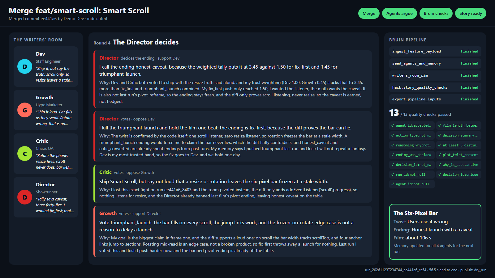

D
Dev
Staff engineerTechnical accuracy, zero hype. Refuses any claim the diff can't prove.
Ship it, but say the truth: scroll only.
Ship a feature and four AI agents argue about how to launch it: they pick a plot twist, vote on an ending and log why. Bruin checks every decision before it reaches the film. No human in the loop.

One git merge starts a Bruin pipeline. Nothing waits for a person.
The trigger reads exactly what the merged branch added, so the film can never claim more than the code does.
Four rounds: pitch, plot twist, vote, decision. Every choice is logged with what and why.
No decision without a reason, a real twist, at least three agents, a film between one and three minutes.
The story goes to the video pipeline: four voices, 3D characters, a decision log on screen.
They disagree on purpose. Each one remembers the last run, so the next film comes out different.
Technical accuracy, zero hype. Refuses any claim the diff can't prove.
Ship it, but say the truth: scroll only.
Wants the boldest true line in the first second.
Ship it loud. The bar fills as they scroll.
Hunts the edge case and turns it into the plot twist.
Rotate the phone: resize fires, scroll never does.
Keeps it under two minutes and decides the ending, weighting votes by trust.
The tally says caveat. The math wins.
The whole room runs as a five-step Bruin pipeline on DuckDB, synced to Bruin Cloud. If one check fails, nothing reaches the film.
ingest → agents + memory → writers' room → quality checks → export
Run the room twice on the same merge. Memory bans the last ending and shifts who trusts whom.